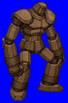
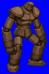
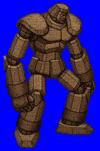
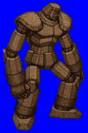

Height: 2-5 meters Weight: 500-1200 lbs.
Habitat: Cave, dungeon Origin: West Asia
Meaning: From Hebrew, meaning "malleable form"
As a monster fashioned by human hands, the types of golems are limited only by the imagination of man. The most common materials used include earth, bone, and iron. In ancient Israel, it was thought that rabbis were able to give the earth form using mystical techniques. It was thought that the golems represented "emeth" or truth. Removing the initial "e" gives one "meth" or death, which is what one invites if the golem is broken.